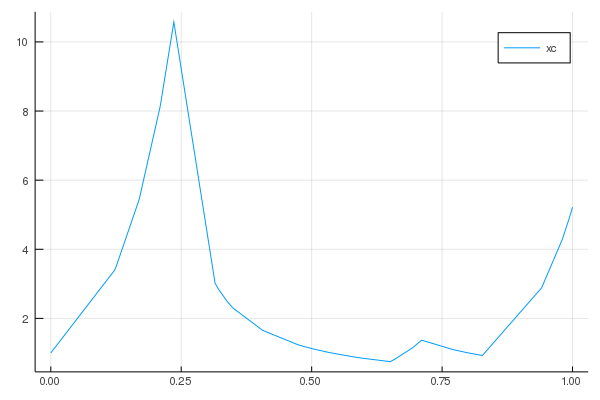

See also the examples directory for more involved examples.
Basic example with CHV method
A simple example of jump process is shown. We look at the following process of switching dynamics where
In between jumps, $x_c$ evolves according to
We first need to load the library.
using PiecewiseDeterministicMarkovProcesses
const PDMP = PiecewiseDeterministicMarkovProcessesWe then define a function that encodes the dynamics in between jumps. We need to provide the vector field of the ODE. Hence, we define a function that, given the continuous state $x_c$ and the discrete state $x_d$ at time $t$, returns the vector field. In addition some parameters can be passed with the variable parms.
function F!(ẋ, xc, xd, parms, t)
if mod(xd[1],2)==0
ẋ[1] = 10xc[1]
else
ẋ[1] = -3xc[1]^2
end
endLet's consider a stochastic process with following transitions:
| Transition | Rate | Reaction number | Jump |
|---|---|---|---|
| $x_d\to x_d+[1,0]$ | $k(x_c)$ | 1 | [1] |
| $x_d\to x_d+[0,1]$ | $parms$ | 2 | [1] |
We implement these jumps using a 2x1 matrix nu of Integers, such that the jumps on each discrete component xd are given by nu * xd. Hence, we have nu = [1 0;0 -1].
The rates of these reactions are encoded in the following function.
k(x) = 1 + x
function R!(rate, xc, xd, parms, t, issum::Bool)
# rate function
if issum == false
# in the case, one is required to mutate the vector `rate`
rate[1] = k(xc[1])
rate[2] = parms[1]
return 0.
else
# in this case, one is required to return the sum of the rates
return k(xc[1]) + parms[1]
end
end
# initial conditions for the continuous/discrete variables
xc0 = [1.0]
xd0 = [0, 0]
# matrix of jumps for the discrete variables, analogous to chemical reactions
nu = [1 0 ; 0 -1]
# parameters
parms = [50.]We define a problem type by giving the characteristics of the process F, R, Delta, nu, the initial conditions, and the timespan to solve over:
Random.seed!(8) # to get the same result as this simulation!
problem = PDMP.PDMPProblem(F!, R!, nu, xc0, xd0, parms, (0.0, 10.0))After defining the problem, you solve it using solve.
sol = PDMP.solve(problem, CHV(CVODE_BDF()))In this case, we chose to sample pb with the CHV algorithm where the flow in between jumps is integrated with the solver CVODE_BDF() from DifferentialEquations.jl.
We can then plot the solution as follows:
# plotting
using Plots
Plots.plot(sol.time,sol.xc[1,:],label="xc")This produces the graph:

Basic example with the rejection method
The previous method is useful when the total rate function varies a lot. In the case where the total rate is mostly constant in between jumps, the rejection method is more appropriate.
The rejection method assumes some a priori knowledge of the process one wants to simulate. In particular, the user must be able to provide a bound on the total rate. More precisely, the user must provide a constant bound in between the jumps. To use this method, R_tcp! must return sum(rate), bound_rejection. Note that this means that in between jumps, one has:
sum(rate)(t) <= bound_rejection
function R2!(rate, xc, xd, parms, t, issum::Bool)
# rate function
bound_rejection = 1. + parms[1] + 15 # bound on the total rate
if issum == false
# in the case, one is required to mutate the vector `rate`
rate[1] = k(xc[1])
rate[2] = parms[1]
return 0., bound_rejection
else
# in this case, one is required to return the sum of the rates
return k(xc[1]) + parms[1], bound_rejection
end
endWe can now simulate this process as follows
Random.seed!(8) # to get the same result as this simulation!
problem = PDMP.PDMPProblem(F!, R2!, nu, xc0, xd0, parms, (0.0, 1.0))
sol = PDMP.solve(problem, Rejection(CVODE_BDF()))In this case, we chose to sample pb with the Rejection algorithm where the flow in between jumps is integrated with the solver CVODE_BDF() from DifferentialEquations.jl.
We can then plot the solution as follows:
# plotting
using Plots
Plots.plot(sol.time,sol.xc[1,:],label="xc")This produces the graph:
